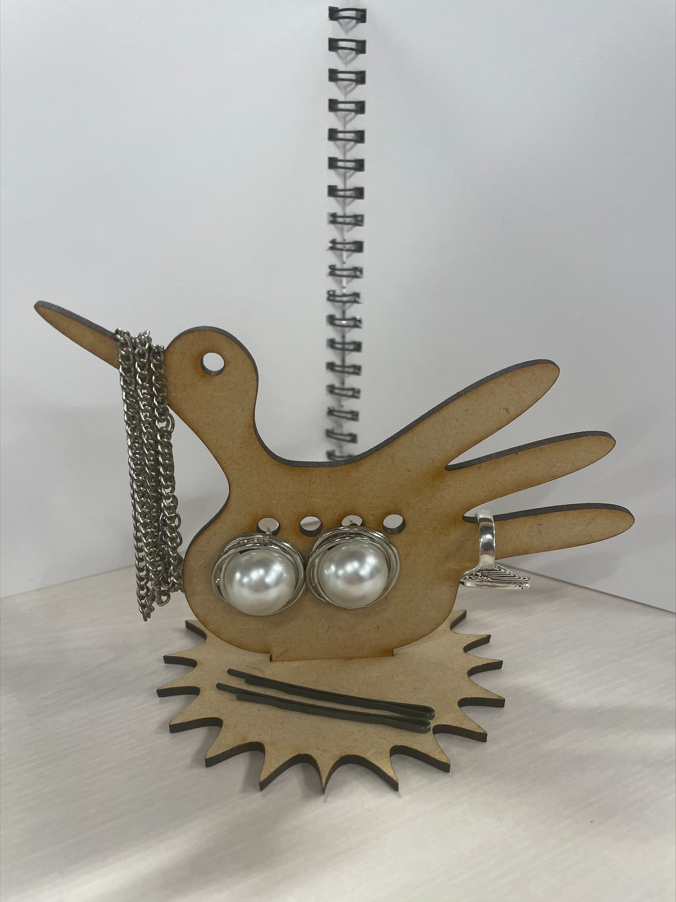

<h1>鳥のジュエリーホルダー</h1>

<h2>作品スケッチ</h2>

<div>どこに何が飾れるか考える</div>

<h2>実際に作った作品の画像</h2>

<div>くちばしの部分には何か引っかけるようにして、真ん中の部分でピアスをかざる</div>
羽の部分で指輪を飾る

<h2>作品の説明</h2>
<div>普通のジュエリーホルダーではなく、鳥をイメージした。</div>
何でも飾れる。<br>

<h2>なぜ作ろうと思ったか</h2>
自分が普段使っているジュエリーホルダーは、とてもシンプルで飾っていても面白くないと思ったから。<br>
だからおいていても映えるようなデザインのものを作りたかった。


